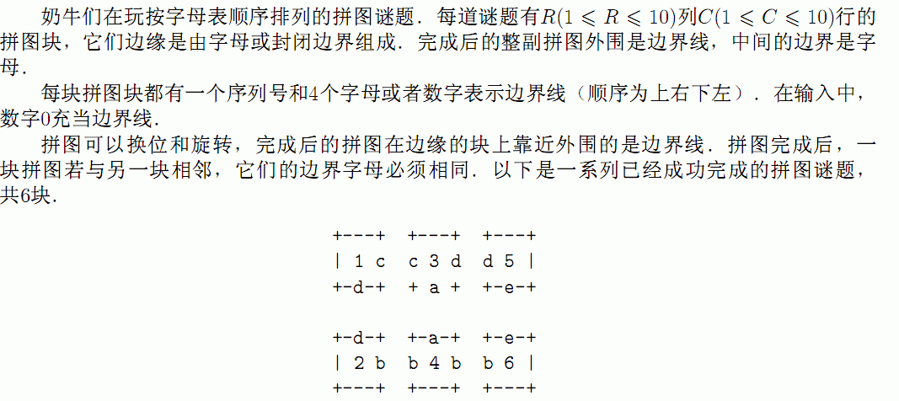

第1行是两个整数R和C，用空格隔开．从第2行到第RxC+I行，每一行包含1个数字和4个代表边界的符号（可以是字母或数字0）．

第1行是两个整数R和C，用空格隔开．从第2行到第RxC+I行，每一行包含1个数字和4个代表边界的符号（可以是字母或数字0）．
输出换位及旋转后的拼图．共RxC行，每行第一个数字代表第几块拼图块，后面四个字符，按顺序代表4个边界字母（边界线仍用0表示）．
答案可能有多组，输出一组即可．
2 3
1 c d 0 0
2 0 d b 0
3 c 0 d a
4 b a b 0
5 d 0 0 e
6 0 0 b e
INPUT DETAILS:
Describes the input puzzle although with some of the pieces rotated
compared to the sample solution.
1 0 c d 0
3 0 d a c
5 0 0 e d
2 d b 0 0
4 a b 0 b
6 e 0 0 b
OUTPUT DETAILS:
As shown in the diagram in the task text. Other solutions (like
reflections) are possible; a grading program will check your answer.
请不要提交!